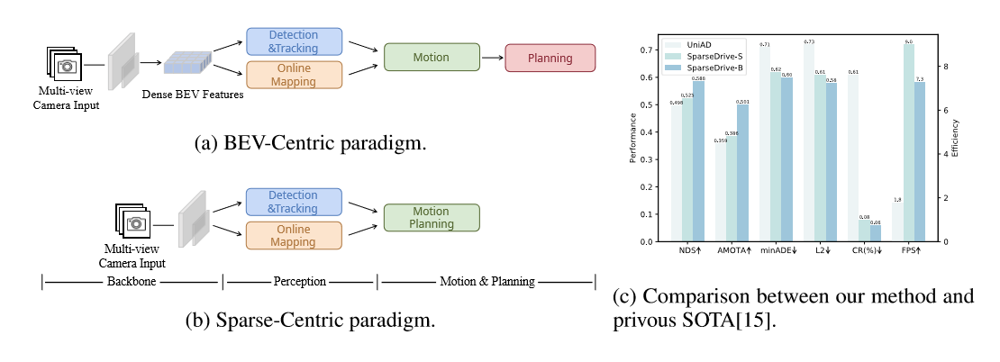
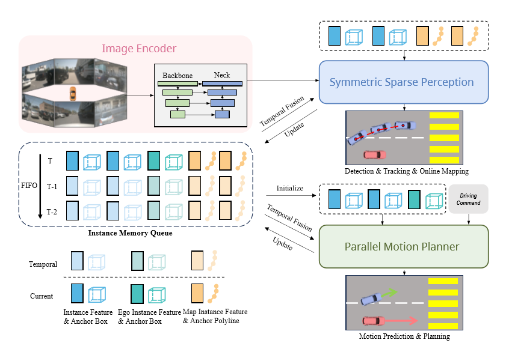
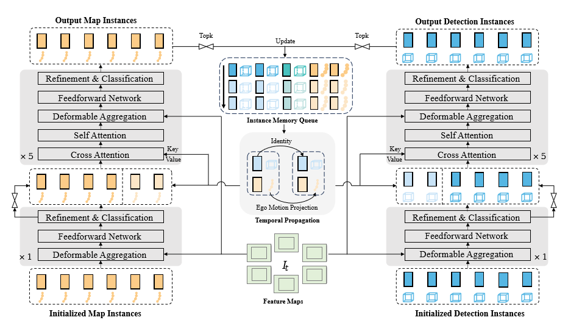
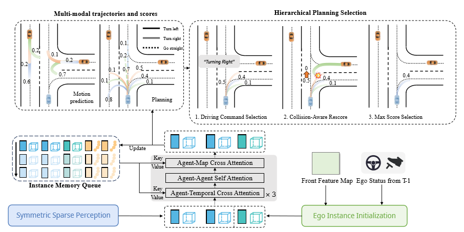
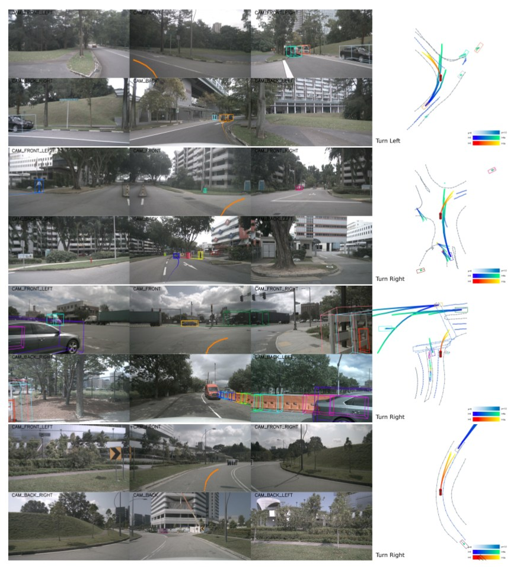
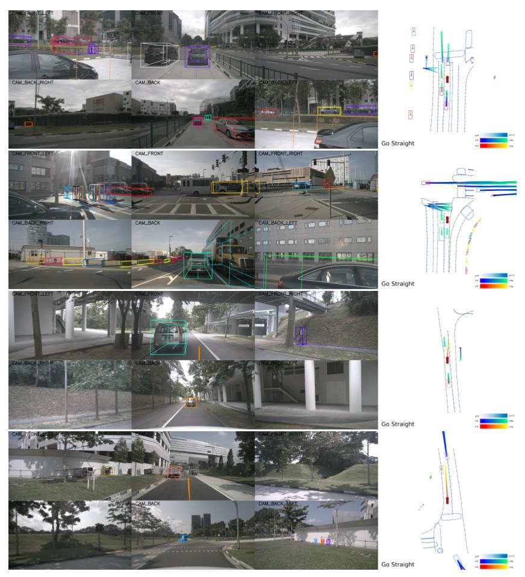

目次
SparseDrive: End-to-End Autonomous Driving via Sparse Scene Representation
Wenchao Sun1,2、Xuewu Lin2、Yining Shi1、Chuang Zhang1、Haoran Wu1、Sifa Zheng1
1 Tsinghua University 2 Horizon
arXiv:2405.19620v2 [cs.CV]、2024年5月31日（プレプリント、査読中）
翻訳について：原文 PDF は
32_SparseDrive_2405.19620.pdf（全 16 ページ）。本文、図の説明、図中ラベル、表、脚注、付録を訳出し、論文タイトルと参考文献は原文のまま掲載。図は原図を掲載し、英語ラベルの日本語訳を併記した。数式・数値・引用番号・コードの識別子は原文を維持。原文の記述に関する補足は「訳注」と明示し、本文と区別している。
要旨
確立されたモジュール型の自動運転システムは、知覚・予測・計画といった独立したタスクに分離されており、モジュール間での情報損失と誤差の蓄積に悩まされている。これに対し、エンドツーエンドのパラダイムは複数のタスクを完全に微分可能な 1 つのフレームワークに統合し、計画を重視した方針での最適化を可能にする。エンドツーエンドのパラダイムには大きな可能性があるものの、既存手法の性能と効率はいずれも満足のいくものではなく、とりわけ計画の安全性の面で不十分である。我々はその原因を、計算コストの高い BEV（鳥瞰図、bird's eye view）特徴と、予測および計画の素朴な設計にあると考える。そこで我々は、エンドツーエンド自動運転のためのスパース表現を探究し、タスク設計を見直して、SparseDrive と名付けた新しいパラダイムを提案する。具体的には、SparseDrive は対称スパース知覚モジュールと並列動作プランナから構成される。スパース知覚モジュールは、検出・追跡・オンラインマッピングを対称なモデル構造で統一し、運転シーンの完全にスパースな表現を学習する。動き予測と計画については、これら 2 つのタスクの間に大きな類似性があることを再検討し、動作プランナの並列設計を導く。計画をマルチモーダルな問題としてモデル化するこの並列設計に基づき、衝突考慮型のリスコアモジュールを組み込んだ階層的計画選択戦略を提案し、合理的かつ安全な軌道を最終的な計画出力として選択する。こうした効果的な設計により、SparseDrive はすべてのタスクの性能で従来の最先端手法を大差で上回り、同時に学習と推論の効率もはるかに高い。今後の研究を促進するため、コードは https://github.com/swc-17/SparseDrive で公開予定である。
1 はじめに
従来の自動運転システムは、逐次的に並んだモジュール型のタスクとして構成されるのが特徴である。解釈性や誤差の追跡の面では有利であるが、連続するモジュール間での情報損失と誤差の蓄積が避けられず、システムが本来達成し得る最適な性能を制限してしまう。
近年、有望な研究方向としてエンドツーエンドの運転パラダイムが登場した。このパラダイムはすべてのタスクを 1 つの全体的なモデルに統合し、最終的な目的である計画に向けて最適化できる。しかし、既存手法［15, 20］は性能と効率の面で満足のいくものではない。一方では、従来手法は計算コストの高い BEV 特徴に依存している。他方では、予測と計画の素朴な設計がモデルの性能を制限している。我々は従来手法を BEV 中心（BEV-Centric）パラダイムとして図 1a にまとめた。
エンドツーエンドのパラダイムの可能性を最大限に引き出すため、我々は既存手法のタスク設計を見直し、動き予測と計画が共有する 3 つの主要な共通点が見過ごされていると主張する。それは次のとおりである。(1) 周囲のエージェントと自車両の将来軌道を予測することを目的とする以上、動き予測と計画はいずれも道路上のエージェント間の高次かつ双方向の相互作用を考慮すべきである。しかし、従来手法は通常、動き予測と計画に逐次的な設計を採用しており、自車両が周囲のエージェントに与える影響を無視している。(2) 将来軌道を正確に予測するには、シーン理解のための意味情報と、エージェントの将来の動きを予測するための幾何情報が必要であり、これは動き予測と計画の両方に当てはまる。これらの情報は周囲のエージェントについては上流の知覚タスクで抽出されるが、自車両については見落とされている。(3) 動き予測と計画はいずれも本質的な不確実性を伴うマルチモーダルな問題であるが、従来手法は計画について決定論的な軌道しか予測しない。

図1：各種エンドツーエンドパラダイムの比較。(a) BEV 中心パラダイム。(b) 提案するスパース中心パラダイム。(c) (a) と (b) の性能および効率の比較（小図 (c) の題：本手法と従来の SOTA［15］との比較）。
図中ラベル：Multi-view Camera Input＝マルチビューカメラ入力、Dense BEV Features＝密な BEV 特徴、Detection &Tracking＝検出・追跡、Online Mapping＝オンラインマッピング、Motion＝動き予測、Planning＝計画、Motion Planning＝動き予測・計画、Backbone＝バックボーン、Perception＝知覚、Motion & Planning＝動き予測と計画、Performance＝性能、Efficiency＝効率、BEV-Centric paradigm＝BEV 中心パラダイム、Sparse-Centric paradigm＝スパース中心パラダイム。棒グラフの凡例は UniAD、SparseDrive-S、SparseDrive-B。
そこで我々は、図 1b に示すスパース中心（Sparse-Centric）パラダイムである SparseDrive を提案する。具体的には、SparseDrive は対称スパース知覚モジュールと並列動作プランナから構成される。分離されたインスタンス特徴と幾何アンカーを 1 つのインスタンス（動的な道路エージェントまたは静的な地図要素）の完全な表現とし、対称スパース知覚（Symmetric Sparse Perception）は検出・追跡・オンラインマッピングの各タスクを対称なモデル構造で統一して、完全にスパースなシーン表現を学習する。並列動作プランナ（Parallel Motion Planner）では、まず自車インスタンス初期化モジュールによって、意味と幾何の両方を考慮した自車インスタンスを得る。自車インスタンスとスパース知覚から得た周囲エージェントのインスタンスを用いて、動き予測と計画を同時に行い、すべての道路エージェントについてマルチモーダルな軌道を得る。計画の合理性と安全性を確保するため、衝突考慮型のリスコアモジュールを組み込んだ階層的計画選択戦略を適用し、マルチモーダルな軌道候補の中から最終的な計画軌道を選択する。
上述の効果的な設計により、SparseDrive は図 1c に示すとおり、エンドツーエンド自動運転の大きな可能性を引き出す。余計な工夫なしに、我々のベースモデル SparseDrive-B は平均 L2 誤差を 19.4%（0.58m 対 0.72m）、衝突率を 71.4%（0.06% 対 0.21%）大きく削減する。従来の SOTA（最先端、state-of-the-art）手法である UniAD［15］と比較して、我々の小型モデル SparseDrive-S はすべてのタスクで優れた性能を達成しつつ、学習は 7.2 倍（20 h 対 144 h）、推論は 5.0 倍（9.0 FPS 対 1.8 FPS）高速に動作する。
本研究の主な貢献は次のようにまとめられる。
- エンドツーエンド自動運転のためのスパースなシーン表現を探究し、スパースなインスタンス表現によって複数のタスクを統一する、SparseDrive と名付けたスパース中心パラダイムを提案する。
- 動き予測と計画が共有する大きな類似性を再検討し、それに応じて動作プランナの並列設計を導く。さらに、計画性能を高めるために、衝突考慮型のリスコアモジュールを組み込んだ階層的計画選択戦略を提案する。
- 難度の高い nuScenes［1］ベンチマークにおいて、SparseDrive はすべての指標、特に安全性に直結する指標である衝突率で従来の SOTA 手法を上回り、かつはるかに高い学習・推論効率を保つ。
2 関連研究
2.1 マルチビュー 3D 検出
マルチビュー 3D 検出は、自動運転システムの安全性の前提条件である。LSS［42］は深度推定を用いて画像特徴を 3D 空間へ持ち上げ（lift）、特徴を BEV 平面に投げ落とす（splat）。後続の研究は lift-splat 操作を 3D 検出の分野に適用し、精度［18, 16, 25, 24］と効率［37, 17］の両面で大きな改善を達成した。一部の研究［26, 48, 21, 5］は、BEV クエリの集合をあらかじめ定義し、それらを透視ビューへ投影して特徴をサンプリングする。別の系統の研究は、密な BEV 特徴への依存をなくしている。PETR シリーズ［35, 36, 47］は 3D 位置エンコーディングと大域的な注意機構を導入し、ビュー変換を暗黙的に学習する。Sparse4D シリーズ［31, 32, 33］は 3D 空間に明示的なアンカーを設定し、それらを画像ビューに投影して局所特徴を集約し、反復的にアンカーを洗練する。
2.2 エンドツーエンド追跡
多くのマルチオブジェクト追跡（MOT）手法は、データアソシエーションのような後処理に依存する、検出による追跡（tracking-by-detection）方式を採用している。このようなパイプラインはニューラルネットワークの能力を十分に活用できない。［2］のオブジェクトクエリに触発され、一部の研究［52, 55, 50, 41, 46, 54］は追跡中のインスタンスをストリーミング方式でモデル化するためにトラッククエリを導入している。MOTR［52］はトラックレットを考慮したラベル割り当てを提案しており、これはトラッククエリに同一の対象を継続的に検出させるもので、検出とアソシエーションの間の競合に悩まされる［55, 50］。Sparse4Dv3 は、時間方向に伝播されたインスタンスがすでに同一性の一貫性を持つことを示し、単純な ID 割り当て処理で SOTA の追跡性能を達成している。
2.3 オンラインマッピング
HD マップの構築には高いコストと膨大な人的労力がかかるため、HD マップの代替としてオンラインマッピングが提案されている。HDMapNet［23］は BEV セマンティックセグメンテーションと後処理を組み合わせて、ベクトル化された地図インスタンスを得る。VectorMapNet［34］は 2 段階の自己回帰型 Transformer を用いてオンラインで地図を構築する。MapTR［29］は地図要素を等価な置換を持つ点集合としてモデル化し、地図要素の定義の曖昧さを回避する。BeMapNet は区分的ベジェ曲線を採用して地図要素の詳細を記述する。StreamMapNet［51］は時間方向のモデル化のために BEV 融合とクエリ伝播を導入している。
2.4 エンドツーエンド動き予測
エンドツーエンドの動き予測は、従来のパイプラインにおける連鎖的な誤差を避けるために提案された。FaF［40］は単一の畳み込みネットワークを用いて、現在と将来のバウンディングボックスを両方予測する。IntentNet［3］はさらに一歩進めて、高レベルの行動と長期的な軌道の両方を推論する。PnPNet［28］はオンライン追跡モジュールを導入し、動き予測のために軌道レベルの特徴を集約する。ViP3D［10］は画像と HD マップを入力とし、エージェントクエリを用いて追跡と予測を行う。PIP［19］は人手でアノテーションされた HD マップを局所的なベクトル化地図で置き換える。
2.5 エンドツーエンド計画
エンドツーエンド計画の研究は前世紀から続けられている［43］。初期の研究［6, 7, 44］は知覚や動き予測といった中間タスクを省略しており、解釈性に欠け、最適化も難しい。一部の研究［14, 4, 45, 8］は知覚や予測の結果から明示的なコストマップを構築して解釈性を高めているが、コスト最小の最良軌道を選択するのに人手で設計したルールに依存している。最近では、UniAD［15］が統一的なクエリ設計を提案して様々なタスクを目標指向のモデルに統合し、知覚・予測・計画において顕著な性能を達成した。VAD［20］はシーン学習と計画の制約にベクトル化表現を用いる。GraphAD［56］は交通シーンにおける複雑な相互作用のためにグラフモデルを利用する。FusionAD［49］はエンドツーエンド運転をマルチセンサ入力へ拡張する。しかし、従来手法は主にシーン学習に焦点を当てており、予測と計画には素朴な設計を採用していて、これら 2 つのタスクの類似性を十分に考慮しておらず、性能を大きく制限している。

図2：SparseDrive の概要。SparseDrive はまずマルチビュー画像を特徴マップへエンコードし、次に対称スパース知覚によってスパースなシーン表現を学習し、最後に動き予測と計画を並列に行う。時間方向のモデル化のためにインスタンスメモリキューを考案している。
図中ラベル：Image Encoder＝画像エンコーダ、Backbone＝バックボーン、Neck＝ネック、Symmetric Sparse Perception＝対称スパース知覚、Temporal Fusion＝時間融合、Update＝更新、Detection & Tracking & Online Mapping＝検出・追跡・オンラインマッピング、Instance Memory Queue＝インスタンスメモリキュー、Initialize＝初期化、Driving Command＝運転コマンド、Parallel Motion Planner＝並列動作プランナ、Motion Prediction & Planning＝動き予測・計画、Temporal＝時間方向（過去）、Current＝現在、Instance Feature & Anchor Box＝インスタンス特徴とアンカーボックス、Ego Instance Feature & Anchor Box＝自車インスタンス特徴とアンカーボックス、Map Instance Feature & Anchor Polyline＝地図インスタンス特徴とアンカーポリライン
3 手法
3.1 概要
SparseDrive の全体フレームワークを図 2 に示す。具体的には、SparseDrive は画像エンコーダ、対称スパース知覚、並列動作プランナの 3 つの部分から構成される。マルチビュー画像が与えられると、バックボーンネットワークとネックからなる画像エンコーダが、まず画像をマルチビュー・マルチスケールの特徴マップ \( I = \left\{ I_s \in \mathbb{R}^{N \times C \times H_s \times W_s} \,|\, 1 \le s \le S \right\} \) にエンコードする。ここで \( S \) はスケール数、\( N \) はカメラビュー数である。対称スパース知覚モジュールでは、特徴マップ \( I \) を 2 つのインスタンス群に集約し、運転シーンのスパース表現を学習する。それぞれ周囲のエージェントと地図要素を表すこれら 2 つのインスタンス群は、並列動作プランナに入力され、初期化された自車インスタンスと相互作用する。動作プランナは周囲のエージェントと自車両のマルチモーダルな軌道を同時に予測し、階層的計画選択戦略によって安全な軌道を最終的な計画結果として選択する。
3.2 対称スパース知覚
図 3 に示すように、スパース知覚モジュールのモデル構造は構造的な対称性を示しており、検出・追跡・オンラインマッピングを 1 つに統一している。
スパース検出。周囲のエージェントは、インスタンス特徴の集合 \( F_d \in \mathbb{R}^{N_d \times C} \) とアンカーボックス \( B_d \in \mathbb{R}^{N_d \times 11} \) で表現される。ここで \( N_d \) はアンカー数、\( C \) は特徴チャネル次元である。各アンカーボックスは位置、寸法、ヨー角、速度で構成される。
\[ \left\{ x, y, z, \ln w, \ln h, \ln l, \sin yaw, \cos yaw, vx, vy, vz \right\}. \]
スパース検出ブランチは \( N_{dec} \) 個のデコーダから構成され、1 つの非時間デコーダと \( N_{dec} - 1 \) 個の時間デコーダを含む。各デコーダは特徴マップ \( I \)、インスタンス特徴 \( F_d \)、アンカーボックス \( B_d \) を入力とし、更新されたインスタンス特徴と洗練されたアンカーボックスを出力する。非時間デコーダはランダムに初期化されたインスタンスを入力とし、時間デコーダの入力は現在フレームと過去フレームの両方から得られる。具体的には、非時間デコーダは 3 つのサブモジュール、すなわち変形可能集約（deformable aggregation）、フィードフォワードネットワーク（FFN）、および洗練と分類のための出力層を含む。変形可能集約モジュールは、アンカーボックス \( B_d \) の周囲に固定または学習可能なキーポイントを生成し、それらを特徴マップ \( I \) に投影して特徴をサンプリングする。インスタンス特徴 \( F_d \) はサンプリングされた特徴との加算によって更新され、出力層において分類スコアとアンカーボックスのオフセットを予測する役割を担う。時間デコーダには 2 つの追加のマルチヘッド注意層がある。前フレームからの時間インスタンスと現在のインスタンスとの間の時間クロス注意と、現在のインスタンス間の自己注意である。マルチヘッド注意層では、アンカーボックスは高次元のアンカー埋め込み \( E_d \in \mathbb{R}^{N_d \times C} \) に変換され、位置エンコーディングとして用いられる。

図3：対称スパース知覚のモデル構造。検出・追跡・オンラインマッピングを対称な構造で統一する。
図中ラベル：Output Map Instances＝出力地図インスタンス、Output Detection Instances＝出力検出インスタンス、Refinement & Classification＝洗練と分類、Feedforward Network＝フィードフォワードネットワーク、Deformable Aggregation＝変形可能集約、Self Attention＝自己注意、Cross Attention＝クロス注意、Key/Value＝キー／バリュー、Topk＝上位 k 個の選択、Update＝更新、Instance Memory Queue＝インスタンスメモリキュー、Identity＝恒等写像、Ego Motion Projection＝自車運動による投影、Temporal Propagation＝時間伝播、Feature Maps＝特徴マップ、Initialized Map Instances＝初期化された地図インスタンス、Initialized Detection Instances＝初期化された検出インスタンス
スパースオンラインマッピング。オンラインマッピングブランチは、インスタンスの定義が異なる点を除き、検出ブランチと同じモデル構造を共有する。静的な地図要素については、アンカーを \( N_p \) 個の点からなるポリラインとして定式化する。
\[ \left\{ x_0, y_0, x_1, y_1, \ldots, x_{N_p - 1}, y_{N_p - 1} \right\}. \]
これにより、すべての地図要素は地図インスタンス特徴 \( F_m \in \mathbb{R}^{N_m \times C} \) とアンカーポリライン \( L_m \in \mathbb{R}^{N_m \times N_p \times 2} \) で表現できる。ここで \( N_m \) はアンカーポリラインの数である。
スパース追跡。追跡については、Sparse4Dv3［33］の ID 割り当て処理に従う。すなわち、あるインスタンスの検出信頼度がしきい値 \( T_{thresh} \) を超えると、そのインスタンスは対象に固定されて ID が割り当てられ、この ID は時間伝播を通じて変化しない。この追跡戦略は追跡のための制約を一切必要とせず、スパース知覚モジュールの洗練された単純な対称設計をもたらす。
3.3 並列動作プランナ
図 4 に示すように、並列動作プランナは 3 つの部分、すなわち自車インスタンス初期化、時空間相互作用、階層的計画選択から構成される。
自車インスタンス初期化。周囲のエージェントと同様に、自車両は自車インスタンス特徴 \( F_e \in \mathbb{R}^{1 \times C} \) と自車アンカーボックス \( B_e \in \mathbb{R}^{1 \times 11} \) で表現される。従来手法では自車特徴は通常ランダムに初期化されるが、我々は、動き予測と同様に、計画のためには自車特徴にも豊富な意味情報と幾何情報が必要であると主張する。しかし、周囲のエージェントのインスタンス特徴は画像特徴マップ \( I \) から集約されるのに対し、自車両はカメラの死角にあるため、自車両についてはこれが実行できない。そこで、前方カメラの最も小さい特徴マップを用いて自車インスタンス特徴を初期化する。
\[ F_e = \mathrm{AveragePool}(I_{front,S}) \tag{1} \]
このようにすることには 2 つの利点がある。最も小さい特徴マップはすでに運転シーンの意味的文脈をエンコードしていること、そして、スパース知覚では検出できないブラックリスト障害物が存在する場合に備えて、密な特徴マップがスパースなシーン表現を補完する役割を果たすことである。
自車アンカー \( B_e \) については、自車両の位置・寸法・ヨー角は既知であるため、これらは自然に設定できる。速度については、真値の速度から直接初期化すると、［27］で示されているように自車状態のリーク（ego status leakage）を招く。そこで、速度、加速度、角速度、操舵角を含む現在の自車状態 \( ES_T \) をデコードする補助タスクを追加する。各フレームでは、前フレームで予測された速度を自車アンカーの速度の初期値として用いる。

図4：並列動作プランナのモデル構造。動き予測と計画を同時に行い、安全な計画軌道を出力する。
図中ラベル：Multi-modal trajectories and scores＝マルチモーダルな軌道とスコア、Motion prediction＝動き予測、Planning＝計画、Turn left＝左折、Turn right＝右折、Go straight＝直進、Hierarchical Planning Selection＝階層的計画選択、"Turning Right"＝「右折」、1. Driving Command Selection＝1. 運転コマンドによる選択、2. Collision-Aware Rescore＝2. 衝突考慮リスコア、3. Max Score Selection＝3. 最大スコアの選択、Instance Memory Queue＝インスタンスメモリキュー、Update＝更新、Agent-Map Cross Attention＝エージェント－地図クロス注意、Agent-Agent Self Attention＝エージェント－エージェント自己注意、Agent-Temporal Cross Attention＝エージェント－時間クロス注意、Front Feature Map＝前方特徴マップ、Ego Status from T-1＝時刻 T-1 からの自車状態、Symmetric Sparse Perception＝対称スパース知覚、Ego Instance Initialization＝自車インスタンス初期化
時空間相互作用。すべての道路エージェント間の高レベルな相互作用を考慮するため、自車インスタンスを周囲のエージェントと連結し、エージェントレベルのインスタンスを得る。
\[ F_a = \mathrm{Concat}(F_d, F_e),\; B_a = \mathrm{Concat}(B_d, B_e) \tag{2} \]
自車インスタンスは、計画にとって重要な時間的手がかりなしに初期化されるため、時間方向のモデル化のために大きさ \( (N_d + 1) \times H \) のインスタンスメモリキューを考案する。\( H \) は保存するフレーム数である。続いて、時空間的文脈を集約するために 3 種類の相互作用、すなわちエージェント－時間クロス注意、エージェント－エージェント自己注意、エージェント－地図クロス注意を行う。なお、スパース知覚モジュールの時間クロス注意では、現在フレームのインスタンスがすべての時間インスタンスと相互作用し、これをシーンレベルの相互作用と呼ぶ。一方、ここでのエージェント－時間クロス注意では、各インスタンスが自身の履歴情報に注目するよう、インスタンスレベルの相互作用を採用する。
次に、周囲のエージェントと自車両の両方について、マルチモーダルな軌道 \( \tau_m \in \mathbb{R}^{N_d \times \mathcal{K}_m \times T_m \times 2} \)、\( \tau_p \in \mathbb{R}^{N_c \times \mathcal{K}_p \times T_p \times 2} \) とスコア \( s_m \in \mathbb{R}^{N_d \times \mathcal{K}_m} \)、\( s_p \in \mathbb{R}^{N_{cmd} \times \mathcal{K}_p} \) を予測する。\( \mathcal{K}_m \) と \( \mathcal{K}_p \) は動き予測と計画のモード数、\( T_m \) と \( T_p \) は動き予測と計画の将来タイムスタンプ数、\( N_{cmd} \) は計画のための運転コマンドの数である（訳注：\( \tau_p \) の次元にある \( N_c \) は、\( s_p \) と同じ \( N_{cmd} \) を指すと考えられる）。一般的な慣行［15, 20］に従い、左折・右折・直進の 3 種類の運転コマンドを用いる。計画については、自車インスタンス特徴から現在の自車状態も追加で予測する。
階層的計画選択。マルチモーダルな計画軌道の候補が得られたところで、追従すべき 1 本の安全な軌道 \( \tau_p^* \) を選択するために、階層的計画選択戦略を設計する。まず、高レベルのコマンド \( cmd \) に対応する軌道候補の部分集合 \( \tau_{p,cmd} \in \mathcal{K}_p \times T_p \times 2 \) を選択する。次に、安全性を確保するため、新しい衝突考慮型のリスコアモジュールを採用する。動き予測の結果を用いて各計画軌道候補の衝突リスクを評価でき、衝突確率の高い軌道についてはその軌道のスコアを下げる。実際には、衝突する軌道のスコアを単純に 0 に設定する。最後に、スコアが最も高い軌道を最終的な計画出力として選択する。
3.4 エンドツーエンド学習
多段階学習。SparseDrive の学習は 2 つの段階に分けられる。段階 1 では、スパースなシーン表現を学習するために、対称スパース知覚モジュールをスクラッチから学習する。段階 2 では、スパース知覚モジュールと並列動作プランナを、モデルの重みを一切固定せずに一緒に学習し、エンドツーエンド最適化の利点を十分に享受する。学習の詳細は付録 B.4 に示す。
表1：nuScenes val データセットにおける知覚結果。SparseDrive はエンドツーエンド手法の中で、すべての知覚タスクにおいて最良の性能を達成する。†：公式チェックポイントで再現。
| 手法 | バックボーン | mAP↑ | mATE↓ | mASE↓ | mAOE↓ | mAVE↓ | mAAE↓ | NDS↑ |
|---|---|---|---|---|---|---|---|---|
| UniAD† ［15］ | ResNet101 | 0.380 | 0.684 | 0.277 | 0.383 | 0.381 | 0.192 | 0.498 |
| SparseDrive-S | ResNet50 | 0.418 | 0.566 | 0.275 | 0.552 | 0.261 | 0.190 | 0.525 |
| SparseDrive-B | ResNet101 | 0.496 | 0.543 | 0.269 | 0.376 | 0.229 | 0.179 | 0.588 |
表1(a)：3D 検出の結果。
| 手法 | AMOTA↑ | AMOTP↓ | Recall↑ | IDS↓ |
|---|---|---|---|---|
| ViP3D ［10］ | 0.217 | 1.625 | 0.363 | - |
| QD3DT ［12］ | 0.242 | 1.518 | 0.399 | - |
| MUTR3D ［54］ | 0.294 | 1.498 | 0.427 | 3822 |
| UniAD ［15］ | 0.359 | 1.320 | 0.467 | 906 |
| SparseDrive-S | 0.386 | 1.254 | 0.499 | 886 |
| SparseDrive-B | 0.501 | 1.085 | 0.601 | 632 |
表1(b)：マルチオブジェクト追跡の結果。
| 手法 | \( AP_{ped} \) ↑ | \( AP_{divider} \) ↑ | \( AP_{boundry} \) ↑ | mAP↑ |
|---|---|---|---|---|
| HDMapNet ［23］ | 14.4 | 21.7 | 33.0 | 23.0 |
| VectorMapNet ［34］ | 36.1 | 47.3 | 39.3 | 40.9 |
| MapTR ［29］ | 56.2 | 59.8 | 60.1 | 58.7 |
| VAD† ［20］ | 40.6 | 51.5 | 50.6 | 47.6 |
| SparseDrive-S | 49.9 | 57.0 | 58.4 | 55.1 |
| SparseDrive-B | 53.2 | 56.3 | 59.1 | 56.2 |
表1(c)：オンラインマッピングの結果。（訳注：原表では各表の主要指標の列（NDS、AMOTA、mAP）が灰色背景で示され、HDMapNet〜MapTR はモジュール型手法、VAD 以下はエンドツーエンド手法として線で区切られている。太字はそれぞれの群内での最良値。列見出しの boundry は原文のまま（boundary の誤記と思われる））
損失関数。損失関数は 4 つのタスクの損失を含み、各タスクの損失はさらに分類損失と回帰損失に分けられる。マルチモーダルな動き予測と計画のタスクについては、勝者総取り（winner-takes-all）戦略を採用する。計画については、自車状態に対する追加の回帰損失がある。また、知覚モジュールの学習の安定性を高めるため、深度推定を補助タスクとして導入する。エンドツーエンド学習の全体の損失関数は次のとおりである。
\[ \mathcal{L} = \mathcal{L}_{det} + \mathcal{L}_{map} + \mathcal{L}_{motion} + \mathcal{L}_{plan} + \mathcal{L}_{depth}. \tag{3} \]
損失関数の詳細は付録 B.3 に示す。
4 実験
実験は難度の高い nuScenes［1］データセットで行う。このデータセットは 1000 個の複雑な運転シーンを含み、各シーンの長さは約 20 秒である。各タスクの評価指標は付録 A で説明する。モデルには 2 つのバリアントがあり、両者はバックボーンネットワークと入力画像の解像度のみが異なる。小型モデル SparseDrive-S では、バックボーンネットワークとして ResNet50［11］を用い、入力画像サイズは 256×704 である。ベースモデル SparseDrive-B では、バックボーンネットワークを ResNet101 に、入力画像サイズを 512×1408 に変更する。すべての実験は 8 台の NVIDIA RTX 4090 24GB GPU で行う。構成の詳細は付録 B に示す。
4.1 主要な結果
モジュール型手法とエンドツーエンド手法の両方を含む、従来の最先端手法と比較する。エンドツーエンド手法の中で、軽量モデル SparseDrive-S はすべてのタスクで従来の SOTA を上回り、ベースモデル SparseDrive-B は性能の限界をさらに一歩押し上げる。各タスクの主要指標は表中で灰色背景により示している。
知覚。表 1a の 3D 検出では、SparseDrive は 49.6% の mAP と 58.8% の NDS を達成し、UniAD［15］と比較して mAP で +11.6%、NDS で +9.0% の大幅な改善をもたらす。表 1b のマルチオブジェクト追跡では、SparseDrive は 50.1% の AMOTA と最小の ID 切り替え数 632 を達成し、AMOTA で UniAD［15］を +14.2% 上回り、ID 切り替えを 30.2% 削減しており、追跡トラックレットの時間的一貫性を示している。表 1c のオンラインマッピングでは、SparseDrive は 56.2% の mAP を得ており、従来のエンドツーエンド手法 VAD［20］も +8.6% 上回る。
表2：nuScenes val データセットにおける動き予測と計画の結果。SparseDrive は従来手法を大差で上回る。†：公式チェックポイントで再現。*：LiDAR ベースの手法。
| 手法 | minADE(\(m\))↓ | minFDE(\(m\))↓ | MR↓ | EPA↑ |
|---|---|---|---|---|
| Cons Pos. ［15］ | 5.80 | 10.27 | 0.347 | - |
| Cons Vel. ［15］ | 2.13 | 4.01 | 0.318 | - |
| Traditional ［10］ | 2.06 | 3.02 | 0.277 | 0.209 |
| PnPNet ［28］ | 1.15 | 1.95 | 0.226 | 0.222 |
| ViP3D ［10］ | 2.05 | 2.84 | 0.246 | 0.226 |
| UniAD ［15］ | 0.71 | 1.02 | 0.151 | 0.456 |
| SparseDrive-S | 0.62 | 0.99 | 0.136 | 0.482 |
| SparseDrive-B | 0.60 | 0.96 | 0.132 | 0.555 |
表2(a)：予測の結果。
| 手法 | L2(\(m\))↓ | 衝突率（Col. Rate）(%)↓ | ||||||
|---|---|---|---|---|---|---|---|---|
| 1\(s\) | 2\(s\) | 3\(s\) | 平均 | 1\(s\) | 2\(s\) | 3\(s\) | 平均 | |
| FF* ［13］ | 0.55 | 1.20 | 2.54 | 1.43 | 0.06 | 0.17 | 1.07 | 0.43 |
| EO* ［22］ | 0.67 | 1.36 | 2.78 | 1.60 | 0.04 | 0.09 | 0.88 | 0.33 |
| ST-P3 ［14］ | 1.33 | 2.11 | 2.90 | 2.11 | 0.23 | 0.62 | 1.27 | 0.71 |
| UniAD† ［15］ | 0.45 | 0.70 | 1.04 | 0.73 | 0.62 | 0.58 | 0.63 | 0.61 |
| VAD† ［20］ | 0.41 | 0.70 | 1.05 | 0.72 | 0.03 | 0.19 | 0.43 | 0.21 |
| SparseDrive-S | 0.29 | 0.58 | 0.96 | 0.61 | 0.01 | 0.05 | 0.18 | 0.08 |
| SparseDrive-B | 0.29 | 0.55 | 0.91 | 0.58 | 0.01 | 0.02 | 0.13 | 0.06 |
表2(b)：計画の結果。（訳注：原表では主要指標（minADE、L2 平均、衝突率平均）が灰色背景で示されている）
予測。表 2a の動き予測では、SparseDrive は minADE 0.60m、minFDE 0.96m、ミス率（MissRate）13.2%、EPA 0.555 で最良の性能を達成する。UniAD［15］と比較して、SparseDrive は minADE と minFDE の誤差をそれぞれ 15.5%、5.9% 削減する。
計画。表 2b の計画では、すべての手法の中で SparseDrive が顕著な計画性能を達成し、L2 誤差は最小の 0.58m、衝突率は 0.06% である。従来の SOTA である VAD［20］と比較して、SparseDrive は L2 誤差を 19.4%、衝突率を 71.4% 削減しており、本手法の有効性と安全性を示している。
効率。表 3 に示すように、SparseDrive は優れた性能に加えて、学習と推論の両方ではるかに高い効率も達成する。同じバックボーンネットワークを用いた場合、我々のベースモデルは UniAD［15］と比較して学習で 4.8 倍、推論で 4.1 倍高速である。軽量モデルでは、学習と推論でそれぞれ 7.2 倍と 5.0 倍の高速化を達成できる。
| 手法 | 学習効率 | 推論効率 | |||||
|---|---|---|---|---|---|---|---|
| GPU メモリ (G) | バッチサイズ | 時間 (h) | GPU メモリ (M) | FLOPs (G) | パラメータ数 (M) | FPS | |
| UniAD ［15］ | 50.0 | 1 | 48 + 96 | 2451 | 1709 | 125.0 | 1.8 |
| SparseDrive-S | 15.2 | 6 | 18 + 2 | 1294 | 192 | 85.9 | 9.0 |
| SparseDrive-B | 17.6 | 4 | 26 + 4 | 1437 | 787 | 104.7 | 7.3 |
表3：効率の比較結果。SparseDrive は学習と推論の両方で高い効率を達成する。UniAD の学習時間と FPS は、それぞれ 8 台と 1 台の NVIDIA Tesla A100 GPU で測定した。SparseDrive の学習時間と FPS は、それぞれ 8 台と 1 台の NVIDIA Geforce RTX 4090 GPU で測定した。
4.2 アブレーション研究
設計上の選択の有効性を示すため、広範なアブレーション研究を行う。アブレーション実験では SparseDrive-S をデフォルトのモデルとして用いる。
動作プランナにおける設計の効果。予測と計画の類似性を考慮することの重要性を強調するため、表 4 に示すようにいくつかの具体的な実験を考案した。ID-2 は、予測と計画の並列設計を逐次的な順序に変更することで自車両が周囲のエージェントに与える影響を無視しており、動き予測と衝突率の性能が悪化する。ID-3 は、自車インスタンス特徴をランダムに初期化し、自車アンカーのすべてのパラメータを 0 に設定する。自車インスタンスの意味情報と幾何情報を取り除くと、L2 誤差と衝突率の両方で性能が劣化する。ID-4 は計画を決定論的な問題として扱い、確定した軌道を 1 本だけ出力するもので、衝突率が最も高くなる。さらに、ID-5 はインスタンスレベルのエージェント－時間クロス注意を取り除いたもので、L2 誤差が 0.77m まで大きく悪化する。衝突考慮リスコアについては、次の段落で詳しく議論する。
衝突考慮リスコア。従来手法［15, 56］では、知覚結果に基づいて安全性を確保するために事後最適化戦略が採用されている。しかし我々は、この戦略がエンドツーエンドのパラダイムを壊し、表 5 に示すように L2 誤差の深刻な劣化をもたらすと主張する。さらに、我々が再実装した衝突率指標のもとでは、事後最適化は計画をより安全にするどころか、むしろより危険にしている。これに対し、我々の衝突考慮リスコアモジュールは、L2 誤差の増加をごくわずかに抑えつつ衝突率を 0.12% から 0.08% に低減しており、本手法の優位性を示している。
マルチモーダル計画。計画のモード数に関する実験を行う。表 6 に示すように、計画のモード数が増えるにつれて計画性能は継続的に向上し、6 モードで飽和する。これは改めてマルチモーダル計画の重要性を証明している。
| ID | PAL | EII | MTM | ATA | CAR | 予測 | 計画 L2(\(m\)) | 計画 衝突率 (%) | ||||||||
|---|---|---|---|---|---|---|---|---|---|---|---|---|---|---|---|---|
| minADE | minFDE | MR | 1\(s\) | 2\(s\) | 3\(s\) | 平均 | 1\(s\) | 2\(s\) | 3\(s\) | 平均 | ||||||
| 1 | ✓ | ✓ | ✓ | ✓ | ✓ | 0.623 | 0.987 | 0.136 | 0.29 | 0.58 | 0.96 | 0.61 | 0.01 | 0.05 | 0.18 | 0.08 |
| 2 | ✓ | ✓ | ✓ | ✓ | 0.641 | 1.008 | 0.138 | 0.30 | 0.58 | 0.95 | 0.61 | 0.02 | 0.06 | 0.23 | 0.10 | |
| 3 | ✓ | ✓ | ✓ | ✓ | 0.621 | 0.988 | 0.135 | 0.31 | 0.60 | 0.98 | 0.63 | 0.03 | 0.07 | 0.21 | 0.11 | |
| 4 | ✓ | ✓ | ✓ | ✓ | 0.626 | 1.002 | 0.136 | 0.33 | 0.66 | 1.08 | 0.69 | 0.03 | 0.11 | 0.60 | 0.25 | |
| 5 | ✓ | ✓ | ✓ | ✓ | 0.634 | 1.003 | 0.138 | 0.40 | 0.74 | 1.16 | 0.77 | 0.02 | 0.13 | 0.32 | 0.16 | |
| 6 | ✓ | ✓ | ✓ | ✓ | 0.623 | 0.987 | 0.136 | 0.29 | 0.58 | 0.95 | 0.61 | 0.01 | 0.06 | 0.30 | 0.12 | |
表4：並列動作プランナにおける設計のアブレーション。「PAL」は動き予測と計画タスクの並列設計、「EII」は自車インスタンス初期化、「MTM」は計画の複数モード、「ATA」はエージェント－時間クロス注意、「CAR」は衝突考慮リスコアを意味する。
| 手法 | CAR | 事後最適化（Post-optim.） | 計画 L2(\(m\)) | 計画 衝突率 (%) | ||||||
|---|---|---|---|---|---|---|---|---|---|---|
| 1\(s\) | 2\(s\) | 3\(s\) | 平均 | 1\(s\) | 2\(s\) | 3\(s\) | 平均 | |||
| UniAD［15］ | 0.32 | 0.58 | 0.94 | 0.61 | 0.15 | 0.24 | 0.36 | 0.25 | ||
| UniAD［15］ | ✓ | 0.45 | 0.70 | 1.04 | 0.73 | 0.62 | 0.58 | 0.63 | 0.61 | |
| SparseDrive | 0.29 | 0.58 | 0.95 | 0.61 | 0.01 | 0.06 | 0.30 | 0.12 | ||
| SparseDrive | ✓ | 0.29 | 0.58 | 0.96 | 0.61 | 0.01 | 0.05 | 0.18 | 0.08 | |
| SparseDrive | ✓ | 0.44 | 0.73 | 1.11 | 0.76 | 0.29 | 0.21 | 0.38 | 0.30 | |
表5：衝突考慮リスコアと［15］の事後最適化のアブレーション。
| モード数 | 計画 L2(\(m\)) | 計画 衝突率 (%) | ||||||
|---|---|---|---|---|---|---|---|---|
| 1\(s\) | 2\(s\) | 3\(s\) | 平均 | 1\(s\) | 2\(s\) | 3\(s\) | 平均 | |
| 1 | 0.33 | 0.66 | 1.08 | 0.69 | 0.03 | 0.11 | 0.60 | 0.25 |
| 2 | 0.33 | 0.65 | 1.08 | 0.69 | 0.01 | 0.12 | 0.42 | 0.18 |
| 3 | 0.30 | 0.59 | 0.97 | 0.62 | 0.00 | 0.08 | 0.43 | 0.17 |
| 6 | 0.29 | 0.57 | 0.95 | 0.61 | 0.01 | 0.03 | 0.17 | 0.07 |
| 9 | 0.33 | 0.63 | 1.04 | 0.66 | 0.01 | 0.09 | 0.36 | 0.15 |
表6：計画モード数のアブレーション。（訳注：原表 4〜6 では平均値と minADE の列が灰色背景で示されている。なお、表 6 の 6 モードの行（L2 平均 0.61、衝突率平均 0.07）は、同じ既定構成と思われる表 4 の ID-1／表 5 の CAR 行（衝突率平均 0.08）と値がわずかに異なる。原文のまま掲載した）
5 結論と今後の課題
結論。本研究では、エンドツーエンド自動運転の領域において、スパースなシーン表現を探究し、タスク設計を見直した。その結果得られたエンドツーエンドのパラダイム SparseDrive は、顕著な性能と高い効率の両方を達成する。SparseDrive の印象的な性能が、エンドツーエンド自動運転のタスク設計を再考するよう研究コミュニティを刺激し、この分野の技術進歩を促進することを期待する。
今後の課題。本研究にはまだいくつかの限界がある。第一に、我々のエンドツーエンドモデルの性能は、例えばオンラインマッピングタスクのように、依然として単一タスクの手法に及ばない。第二に、データセットの規模はエンドツーエンド自動運転の可能性を最大限に引き出すには十分に大きくなく、またオープンループ評価ではモデルの性能を包括的に表すことができない。これらの問題は今後の探究に残す。
参考文献
参考文献は原文のまま掲載した。
- Holger Caesar, Varun Bankiti, Alex H Lang, Sourabh Vora, Venice Erin Liong, Qiang Xu, Anush Krishnan, Yu Pan, Giancarlo Baldan, and Oscar Beijbom. nuscenes: A multimodal dataset for autonomous driving. In Proceedings of the IEEE/CVF conference on computer vision and pattern recognition, pages 11621–11631, 2020.
- Nicolas Carion, Francisco Massa, Gabriel Synnaeve, Nicolas Usunier, Alexander Kirillov, and Sergey Zagoruyko. End-to-end object detection with transformers. In European conference on computer vision, pages 213–229. Springer, 2020.
- Sergio Casas, Wenjie Luo, and Raquel Urtasun. Intentnet: Learning to predict intention from raw sensor data. In Conference on Robot Learning, pages 947–956. PMLR, 2018.
- Sergio Casas, Abbas Sadat, and Raquel Urtasun. Mp3: A unified model to map, perceive, predict and plan. In Proceedings of the IEEE/CVF Conference on Computer Vision and Pattern Recognition, pages 14403–14412, 2021.
- Shaoyu Chen, Tianheng Cheng, Xinggang Wang, Wenming Meng, Qian Zhang, and Wenyu Liu. Efficient and robust 2d-to-bev representation learning via geometry-guided kernel transformer. arXiv preprint arXiv:2206.04584, 2022.
- Felipe Codevilla, Matthias Müller, Antonio López, Vladlen Koltun, and Alexey Dosovitskiy. End-to-end driving via conditional imitation learning. In 2018 IEEE international conference on robotics and automation (ICRA), pages 4693–4700. IEEE, 2018.
- Felipe Codevilla, Eder Santana, Antonio M López, and Adrien Gaidon. Exploring the limitations of behavior cloning for autonomous driving. In Proceedings of the IEEE/CVF international conference on computer vision, pages 9329–9338, 2019.
- Alexander Cui, Sergio Casas, Abbas Sadat, Renjie Liao, and Raquel Urtasun. Lookout: Diverse multi-future prediction and planning for self-driving. In Proceedings of the IEEE/CVF International Conference on Computer Vision, pages 16107–16116, 2021.
- Tri Dao, Dan Fu, Stefano Ermon, Atri Rudra, and Christopher Ré. Flashattention: Fast and memory-efficient exact attention with io-awareness. Advances in Neural Information Processing Systems, 35:16344–16359, 2022.
- Junru Gu, Chenxu Hu, Tianyuan Zhang, Xuanyao Chen, Yilun Wang, Yue Wang, and Hang Zhao. Vip3d: End-to-end visual trajectory prediction via 3d agent queries. In Proceedings of the IEEE/CVF Conference on Computer Vision and Pattern Recognition, pages 5496–5506, 2023.
- Kaiming He, Xiangyu Zhang, Shaoqing Ren, and Jian Sun. Deep residual learning for image recognition. In Proceedings of the IEEE conference on computer vision and pattern recognition, pages 770–778, 2016.
- Hou-Ning Hu, Yung-Hsu Yang, Tobias Fischer, Trevor Darrell, Fisher Yu, and Min Sun. Monocular quasi-dense 3d object tracking. IEEE Transactions on Pattern Analysis and Machine Intelligence, 45(2):1992–2008, 2022.
- Peiyun Hu, Aaron Huang, John Dolan, David Held, and Deva Ramanan. Safe local motion planning with self-supervised freespace forecasting. In Proceedings of the IEEE/CVF Conference on Computer Vision and Pattern Recognition, pages 12732–12741, 2021.
- Shengchao Hu, Li Chen, Penghao Wu, Hongyang Li, Junchi Yan, and Dacheng Tao. St-p3: End-to-end vision-based autonomous driving via spatial-temporal feature learning. In European Conference on Computer Vision, pages 533–549. Springer, 2022.
- Yihan Hu, Jiazhi Yang, Li Chen, Keyu Li, Chonghao Sima, Xizhou Zhu, Siqi Chai, Senyao Du, Tianwei Lin, Wenhai Wang, et al. Planning-oriented autonomous driving. In Proceedings of the IEEE/CVF Conference on Computer Vision and Pattern Recognition, pages 17853–17862, 2023.
- Junjie Huang and Guan Huang. Bevdet4d: Exploit temporal cues in multi-camera 3d object detection. arXiv preprint arXiv:2203.17054, 2022.
- Junjie Huang and Guan Huang. Bevpoolv2: A cutting-edge implementation of bevdet toward deployment. arXiv preprint arXiv:2211.17111, 2022.
- Junjie Huang, Guan Huang, Zheng Zhu, Yun Ye, and Dalong Du. Bevdet: High-performance multi-camera 3d object detection in bird-eye-view. arXiv preprint arXiv:2112.11790, 2021.
- Bo Jiang, Shaoyu Chen, Xinggang Wang, Bencheng Liao, Tianheng Cheng, Jiajie Chen, Helong Zhou, Qian Zhang, Wenyu Liu, and Chang Huang. Perceive, interact, predict: Learning dynamic and static clues for end-to-end motion prediction. arXiv preprint arXiv:2212.02181, 2022.
- Bo Jiang, Shaoyu Chen, Qing Xu, Bencheng Liao, Jiajie Chen, Helong Zhou, Qian Zhang, Wenyu Liu, Chang Huang, and Xinggang Wang. Vad: Vectorized scene representation for efficient autonomous driving. In Proceedings of the IEEE/CVF International Conference on Computer Vision, pages 8340–8350, 2023.
- Yanqin Jiang, Li Zhang, Zhenwei Miao, Xiatian Zhu, Jin Gao, Weiming Hu, and Yu-Gang Jiang. Polarformer: Multi-camera 3d object detection with polar transformer. In Proceedings of the AAAI conference on Artificial Intelligence, volume 37, pages 1042–1050, 2023.
- Tarasha Khurana, Peiyun Hu, Achal Dave, Jason Ziglar, David Held, and Deva Ramanan. Differentiable raycasting for self-supervised occupancy forecasting. In European Conference on Computer Vision, pages 353–369. Springer, 2022.
- Qi Li, Yue Wang, Yilun Wang, and Hang Zhao. Hdmapnet: An online hd map construction and evaluation framework. In 2022 International Conference on Robotics and Automation (ICRA), pages 4628–4634. IEEE, 2022.
- Yinhao Li, Han Bao, Zheng Ge, Jinrong Yang, Jianjian Sun, and Zeming Li. Bevstereo: Enhancing depth estimation in multi-view 3d object detection with temporal stereo. In Proceedings of the AAAI Conference on Artificial Intelligence, volume 37, pages 1486–1494, 2023.
- Yinhao Li, Zheng Ge, Guanyi Yu, Jinrong Yang, Zengran Wang, Yukang Shi, Jianjian Sun, and Zeming Li. Bevdepth: Acquisition of reliable depth for multi-view 3d object detection. In Proceedings of the AAAI Conference on Artificial Intelligence, volume 37, pages 1477–1485, 2023.
- Zhiqi Li, Wenhai Wang, Hongyang Li, Enze Xie, Chonghao Sima, Tong Lu, Yu Qiao, and Jifeng Dai. Bevformer: Learning bird's-eye-view representation from multi-camera images via spatiotemporal transformers. In European conference on computer vision, pages 1–18. Springer, 2022.
- Zhiqi Li, Zhiding Yu, Shiyi Lan, Jiahan Li, Jan Kautz, Tong Lu, and Jose M Alvarez. Is ego status all you need for open-loop end-to-end autonomous driving? arXiv preprint arXiv:2312.03031, 2023.
- Ming Liang, Bin Yang, Wenyuan Zeng, Yun Chen, Rui Hu, Sergio Casas, and Raquel Urtasun. Pnpnet: End-to-end perception and prediction with tracking in the loop. In Proceedings of the IEEE/CVF Conference on Computer Vision and Pattern Recognition, pages 11553–11562, 2020.
- Bencheng Liao, Shaoyu Chen, Xinggang Wang, Tianheng Cheng, Qian Zhang, Wenyu Liu, and Chang Huang. Maptr: Structured modeling and learning for online vectorized hd map construction. In The Eleventh International Conference on Learning Representations, 2022.
- Tsung-Yi Lin, Priya Goyal, Ross Girshick, Kaiming He, and Piotr Dollár. Focal loss for dense object detection. In Proceedings of the IEEE international conference on computer vision, pages 2980–2988, 2017.
- Xuewu Lin, Tianwei Lin, Zixiang Pei, Lichao Huang, and Zhizhong Su. Sparse4d: Multi-view 3d object detection with sparse spatial-temporal fusion. arXiv preprint arXiv:2211.10581, 2022.
- Xuewu Lin, Tianwei Lin, Zixiang Pei, Lichao Huang, and Zhizhong Su. Sparse4d v2: Recurrent temporal fusion with sparse model. arXiv preprint arXiv:2305.14018, 2023.
- Xuewu Lin, Zixiang Pei, Tianwei Lin, Lichao Huang, and Zhizhong Su. Sparse4d v3: Advancing end-to-end 3d detection and tracking. arXiv preprint arXiv:2311.11722, 2023.
- Yicheng Liu, Tianyuan Yuan, Yue Wang, Yilun Wang, and Hang Zhao. Vectormapnet: End-to-end vectorized hd map learning. In International Conference on Machine Learning, pages 22352–22369. PMLR, 2023.
- Yingfei Liu, Tiancai Wang, Xiangyu Zhang, and Jian Sun. Petr: Position embedding transformation for multi-view 3d object detection. In European Conference on Computer Vision, pages 531–548. Springer, 2022.
- Yingfei Liu, Junjie Yan, Fan Jia, Shuailin Li, Aqi Gao, Tiancai Wang, and Xiangyu Zhang. Petrv2: A unified framework for 3d perception from multi-camera images. In Proceedings of the IEEE/CVF International Conference on Computer Vision, pages 3262–3272, 2023.
- Zhijian Liu, Haotian Tang, Alexander Amini, Xinyu Yang, Huizi Mao, Daniela L Rus, and Song Han. Bevfusion: Multi-task multi-sensor fusion with unified bird's-eye view representation. In 2023 IEEE international conference on robotics and automation (ICRA), pages 2774–2781. IEEE, 2023.
- Ilya Loshchilov and Frank Hutter. Sgdr: Stochastic gradient descent with warm restarts. arXiv preprint arXiv:1608.03983, 2016.
- Ilya Loshchilov and Frank Hutter. Decoupled weight decay regularization. arXiv preprint arXiv:1711.05101, 2017.
- Wenjie Luo, Bin Yang, and Raquel Urtasun. Fast and furious: Real time end-to-end 3d detection, tracking and motion forecasting with a single convolutional net. In Proceedings of the IEEE conference on Computer Vision and Pattern Recognition, pages 3569–3577, 2018.
- Tim Meinhardt, Alexander Kirillov, Laura Leal-Taixe, and Christoph Feichtenhofer. Trackformer: Multi-object tracking with transformers. In Proceedings of the IEEE/CVF conference on computer vision and pattern recognition, pages 8844–8854, 2022.
- Jonah Philion and Sanja Fidler. Lift, splat, shoot: Encoding images from arbitrary camera rigs by implicitly unprojecting to 3d. In Computer Vision–ECCV 2020: 16th European Conference, Glasgow, UK, August 23–28, 2020, Proceedings, Part XIV 16, pages 194–210. Springer, 2020.
- Dean A Pomerleau. Alvinn: An autonomous land vehicle in a neural network. Advances in neural information processing systems, 1, 1988.
- Aditya Prakash, Kashyap Chitta, and Andreas Geiger. Multi-modal fusion transformer for end-to-end autonomous driving. In Proceedings of the IEEE/CVF conference on computer vision and pattern recognition, pages 7077–7087, 2021.
- Abbas Sadat, Sergio Casas, Mengye Ren, Xinyu Wu, Pranaab Dhawan, and Raquel Urtasun. Perceive, predict, and plan: Safe motion planning through interpretable semantic representations. In Computer Vision–ECCV 2020: 16th European Conference, Glasgow, UK, August 23–28, 2020, Proceedings, Part XXIII 16, pages 414–430. Springer, 2020.
- Peize Sun, Jinkun Cao, Yi Jiang, Rufeng Zhang, Enze Xie, Zehuan Yuan, Changhu Wang, and Ping Luo. Transtrack: Multiple object tracking with transformer. arXiv preprint arXiv:2012.15460, 2020.
- Shihao Wang, Yingfei Liu, Tiancai Wang, Ying Li, and Xiangyu Zhang. Exploring object-centric temporal modeling for efficient multi-view 3d object detection. In Proceedings of the IEEE/CVF International Conference on Computer Vision, pages 3621–3631, 2023.
- Chenyu Yang, Yuntao Chen, Hao Tian, Chenxin Tao, Xizhou Zhu, Zhaoxiang Zhang, Gao Huang, Hongyang Li, Yu Qiao, Lewei Lu, et al. Bevformer v2: Adapting modern image backbones to bird's-eye-view recognition via perspective supervision. In Proceedings of the IEEE/CVF Conference on Computer Vision and Pattern Recognition, pages 17830–17839, 2023.
- Tengju Ye, Wei Jing, Chunyong Hu, Shikun Huang, Lingping Gao, Fangzhen Li, Jingke Wang, Ke Guo, Wencong Xiao, Weibo Mao, et al. Fusionad: Multi-modality fusion for prediction and planning tasks of autonomous driving. arXiv preprint arXiv:2308.01006, 2023.
- En Yu, Tiancai Wang, Zhuoling Li, Yuang Zhang, Xiangyu Zhang, and Wenbing Tao. Motrv3: Release-fetch supervision for end-to-end multi-object tracking. arXiv preprint arXiv:2305.14298, 2023.
- Tianyuan Yuan, Yicheng Liu, Yue Wang, Yilun Wang, and Hang Zhao. Streammapnet: Streaming mapping network for vectorized online hd map construction. In Proceedings of the IEEE/CVF Winter Conference on Applications of Computer Vision, pages 7356–7365, 2024.
- Fangao Zeng, Bin Dong, Yuang Zhang, Tiancai Wang, Xiangyu Zhang, and Yichen Wei. Motr: End-to-end multiple-object tracking with transformer. In European Conference on Computer Vision, pages 659–675. Springer, 2022.
- Jiang-Tian Zhai, Ze Feng, Jinhao Du, Yongqiang Mao, Jiang-Jiang Liu, Zichang Tan, Yifu Zhang, Xiaoqing Ye, and Jingdong Wang. Rethinking the open-loop evaluation of end-to-end autonomous driving in nuscenes. arXiv preprint arXiv:2305.10430, 2023.
- Tianyuan Zhang, Xuanyao Chen, Yue Wang, Yilun Wang, and Hang Zhao. Mutr3d: A multi-camera tracking framework via 3d-to-2d queries. In Proceedings of the IEEE/CVF Conference on Computer Vision and Pattern Recognition, pages 4537–4546, 2022.
- Yuang Zhang, Tiancai Wang, and Xiangyu Zhang. Motrv2: Bootstrapping end-to-end multi-object tracking by pretrained object detectors. In Proceedings of the IEEE/CVF Conference on Computer Vision and Pattern Recognition, pages 22056–22065, 2023.
- Yunpeng Zhang, Deheng Qian, Ding Li, Yifeng Pan, Yong Chen, Zhenbao Liang, Zhiyao Zhang, Shurui Zhang, Hongxu Li, Maolei Fu, et al. Graphad: Interaction scene graph for end-to-end autonomous driving. arXiv preprint arXiv:2403.19098, 2024.
A 評価指標
検出と追跡の評価は標準的な評価プロトコル［1］に従う。検出については、平均適合率の平均（mean Average Precision、mAP）、並進の平均誤差（mean Average Error of Translation、mATE）、スケールの平均誤差（mASE）、向きの平均誤差（mAOE）、速度の平均誤差（mAVE）、属性の平均誤差（mAAE）、および nuScenes 検出スコア（nuScenes Detection Score、NDS）を用いてモデルの性能を評価する。追跡については、平均マルチオブジェクト追跡精度（Average Multi-object Tracking Accuracy、AMOTA）、平均マルチオブジェクト追跡適合度（Average Multi-object Tracking Precision、AMOTP）、再現率（RECALL）、ID 切り替え数（Identity Switches、IDS）を指標として用いる。オンラインマッピングについては、車線区分線・横断歩道・道路境界の 3 つの地図クラスについて平均適合率（AP）を計算し、すべてのクラスで平均して平均適合率の平均（mAP）を得る。動き予測については、最小平均変位誤差（minimum Average Displacement Error、minADE）、最小最終変位誤差（minimum Final Displacement Error、minFDE）、ミス率（Miss Rate、MR）、および［10］で提案されたエンドツーエンド予測精度（End-to-end Prediction Accuracy、EPA）などの指標を用いる。動き予測のベンチマークは UniAD［15］に揃えている。
計画については、計画性能を評価するために一般的に用いられる L2 誤差と衝突率を採用する。L2 誤差の評価は VAD［20］に揃えている。衝突率については、従来［15, 20］の実装には 2 つの欠点があり、計画性能の評価が不正確になっている。第一に、従来のベンチマークは障害物のバウンディングボックスをグリッドサイズ 0.5m の占有マップに変換しており、例えば自車両が占有マップの 1 ピクセルより小さい障害物に接近する場合など、特定のケースで誤った衝突判定が生じる［53］。(2) 自車両の進行方向（heading）は考慮されず、変化しないものと仮定されている［27］。計画性能を正確に評価するため、我々は軌道点からヨー角を推定することで自車の進行方向の変化を考慮し、自車両と障害物のバウンディングボックスの重なりを調べることで衝突の有無を判定する。公平な比較のため、公式チェックポイント［15, 20］を用いて我々のベンチマーク上で計画結果を再現する。
B 実装の詳細
B.1 知覚
スパース知覚モジュールでは、デコーダ層の数 \( N_{dec} \) を 6 とし、1 つの非時間デコーダと 5 つの時間デコーダで構成する。アンカーボックス \( B_d \) とアンカーポリライン \( L_m \) の位置は学習セット上での K-Means クラスタリングによって得て、アンカーボックスのその他のパラメータは \( \{1, 1, 1, 0, 1, 0, 0, 0\} \) で初期化する。各地図要素は 20 点で表現する。アンカーボックス数 \( N_d \) とポリライン数 \( N_m \) はそれぞれ 900 と 100 とし、検出とオンラインマッピングの時間インスタンス数はそれぞれ 600 と 33 である。追跡のしきい値 \( T_{thresh} \) は 0.2 とする。検出の知覚範囲は半径 55m の円である。オンラインマッピングの知覚範囲は縦方向・横方向に 60m × 30m である。マルチヘッド注意には、GPU メモリを節約するために Flash Attention［9］を採用する。
B.2 動作プランナ
インスタンスメモリキューに保存するフレーム数 \( H \) は 3 である。動き予測のモード数 \( \mathcal{K}_m \) と計画のモード数 \( \mathcal{K}_p \) はいずれも 6 とする。動き予測の将来タイムスタンプ数 \( \mathcal{T}_m \) と計画の将来タイムスタンプ数 \( \mathcal{T}_p \) はそれぞれ 12 と 6 とする。動作プランナにおける時空間相互作用の後、多層パーセプトロン（MLP）を用いて自車特徴 \( F_e \) から現在フレームの自車状態をデコードする。
\[ ES_T = MLP(F_e) \tag{4} \]
マルチモーダルな軌道とスコアについては、K-Means クラスタリングを用いて事前の意図点（intention points）を求め、正弦波位置エンコーディング PE(·) によってそれらを動きモードクエリ \( MQ_m \in \mathbb{R}^{\mathcal{K}_m \times C} \) と計画モードクエリ \( MQ_p \in \mathbb{R}^{N_{cmd} \times \mathcal{K}_p \times C} \) に変換する。次に、モードクエリをエージェントのインスタンス特徴に加算し、MLP で軌道とスコアをデコードする。
\[ \tau_m = MLP(F_d + MQ_m), \tag{5} \]
\[ s_m = MLP(F_d + MQ_m), \tag{6} \]
\[ \tau_p = MLP(F_e + MQ_p), \tag{7} \]
\[ s_p = MLP(F_e + MQ_p) \tag{8} \]
衝突考慮リスコアモジュールでは、動き予測において信頼度が最も高い 2 本の軌道を用いて、自車両が周囲の障害物と衝突するかどうかを判定する。
B.3 損失関数
知覚では、各真値を 1 つの予測値と対応付けるためにハンガリアンアルゴリズムを採用する。検出損失は、分類のための Focal 損失［30］とボックス回帰のための L1 損失の線形結合である。
\[ L_{det} = \lambda_{det\_cls} L_{det\_cls} + \lambda_{det\_reg} L_{det\_reg}. \tag{9} \]
ID 割り当て処理には追跡のための制約がないため、追跡損失は持たない。オンラインマッピングの損失は検出損失と同様である。
\[ L_{map} = \lambda_{map\_cls} L_{map\_cls} + \lambda_{map\_reg} L_{map\_reg}. \tag{10} \]
深度推定については、回帰に L1 損失を用いる。
\[ L_{depth} = \lambda_{depth} L_{depth}. \tag{11} \]
損失の重みは次のように設定する：\( \lambda_{det\_cls} = 2 \)、\( \lambda_{det\_reg} = 0.25 \)、\( \lambda_{map\_cls} = 1 \)、\( \lambda_{map\_reg} = 10 \)、\( \lambda_{depth} = 0.2 \)。
動き予測と計画については、マルチモーダル出力と真値軌道との間の平均変位誤差（ADE）を計算し、ADE が最小の軌道を正例、残りを負例とみなす。計画では、自車状態を追加で予測する。分類には同じく Focal 損失を、回帰には L1 損失を用いる。
\[ \begin{aligned} L_{motion\_planning} = {} & \lambda_{motion\_cls} L_{motion\_cls} + \lambda_{motion\_reg} L_{motion\_reg} \\ & + \lambda_{plan\_cls} L_{plan\_cls} + \lambda_{plan\_reg} L_{plan\_reg} + \lambda_{plan\_status} L_{plan\_status}, \end{aligned} \tag{12} \]
ここで \( \lambda_{motion\_cls} = 0.2 \)、\( \lambda_{motion\_reg} = 0.2 \)、\( \lambda_{plan\_cls} = 0.5 \)、\( \lambda_{plan\_reg} = 1.0 \)、\( \lambda_{plan\_status} = 1.0 \) である。
B.4 学習の詳細
モデルの学習には AdamW オプティマイザ［39］と Cosine Annealing［38］スケジューラを用いる。学習のハイパーパラメータを表 7 に示す。
| モデル | 学習段階 | バッチサイズ | エポック数 | Lr | バックボーンの lr 倍率 | 重み減衰 |
|---|---|---|---|---|---|---|
| SparseDrive-S | stage-1 | 8 | 100 | \( 4 \times 10^{-4} \) | 0.5 | \( 1 \times 10^{-3} \) |
| SparseDrive-S | stage-2 | 6 | 10 | \( 3 \times 10^{-4} \) | 0.1 | \( 1 \times 10^{-3} \) |
| SparseDrive-B | stage-1 | 4 | 80 | \( 3 \times 10^{-4} \) | 0.1 | \( 1 \times 10^{-3} \) |
| SparseDrive-B | stage-2 | 4 | 10 | \( 3 \times 10^{-4} \) | 0.1 | \( 1 \times 10^{-3} \) |
表7：学習のハイパーパラメータ。
C 可視化

図5：可視化結果。SparseDrive は交差点における異なる旋回モードを学習している。
図中ラベル：CAM_FRONT_LEFT／CAM_FRONT／CAM_FRONT_RIGHT＝左前方／前方／右前方カメラ、CAM_BACK_RIGHT／CAM_BACK／CAM_BACK_LEFT＝右後方／後方／左後方カメラ、Turn Left＝左折（運転コマンド）、Turn Right＝右折（運転コマンド）。右側は BEV 上の検出結果・地図要素・予測軌道・計画軌道の可視化（凡例の文字は原図でも判読困難なため省略）。

図6：可視化結果。SparseDrive は動いているエージェントに道を譲ること、あるいは障害物との衝突を回避することを学習している。
図中ラベル：CAM_FRONT_LEFT 等＝各カメラ視点（図5と同じ）、Go Straight＝直進（運転コマンド）